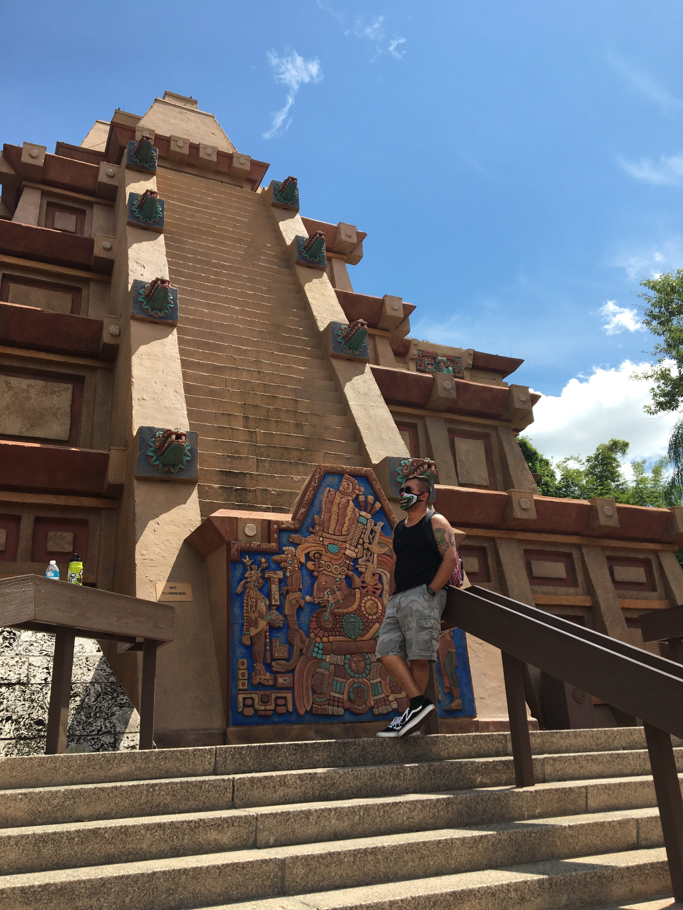

  
<!DOCTYPE html>
<html lang="en" dir="ltr">

<head>
	<meta charset="utf-8">
	<title>Daniel's Photography</title>
		<link rel="stylesheet" href="css/style.css">
</head>
<center>
		<a href="DanielsPhotography/index.html"></a>
</center>
<hr>
	<body>
	</body>
</html>
<center>
	<table cellspacing="30">
		<tr>
			<td><a href="<repository>DanielsPhotography/Gallery.html">GALLERY</a></td>
			<td><a href="DanielsPhotography/Equipment.html">EQUIPMENT</a></td>
			<td><a href="DanielsPhotography/Contact.html">CONTACT ME</a></td>
		</tr>
	</table>
</center>
<hr>
<center>
<table cellspacing="30">
	<tr>
		<td><br></td>
		<td>
			<center>
				<p>My name is Daniel, and I'm an aspiring photographer from Texas.
			<br>I've always been fascinated with capturing photo's since highschool.
			<br> Although I never really focused on keeping a camera with at all times.
			<br>It changed when my little sister was born and I bought a used Canon
			<br>point and shoot camera. I was able to throw that camera in my pocket
			<br> and keep it on my person most of the time.I captured some priceless moments
			<br>of my kid sister's early years. I ended up upgrading to a Canon T5. This
			<br>is the camera that I tend to take with me almost everywhere now. With a family
			<br>that loves Disney we take trips to Disney World frequently. Which in turn gives
			<br>the opportunity to take photos and practice in that environment. We also love visiting
			<br>zoo's which gives me practice capturing wildlife. With two younger siblings gives
			<br>me practice capturing memories of tiny humans as well.
			<br>Hopefully I get the opportunity to capture memories for a long time.
			<br>Thank you for taking the time to visiting my website and viewing my photos.
			</center>
		</td>
		<td></td>
	</tr>
</table>
</center>
